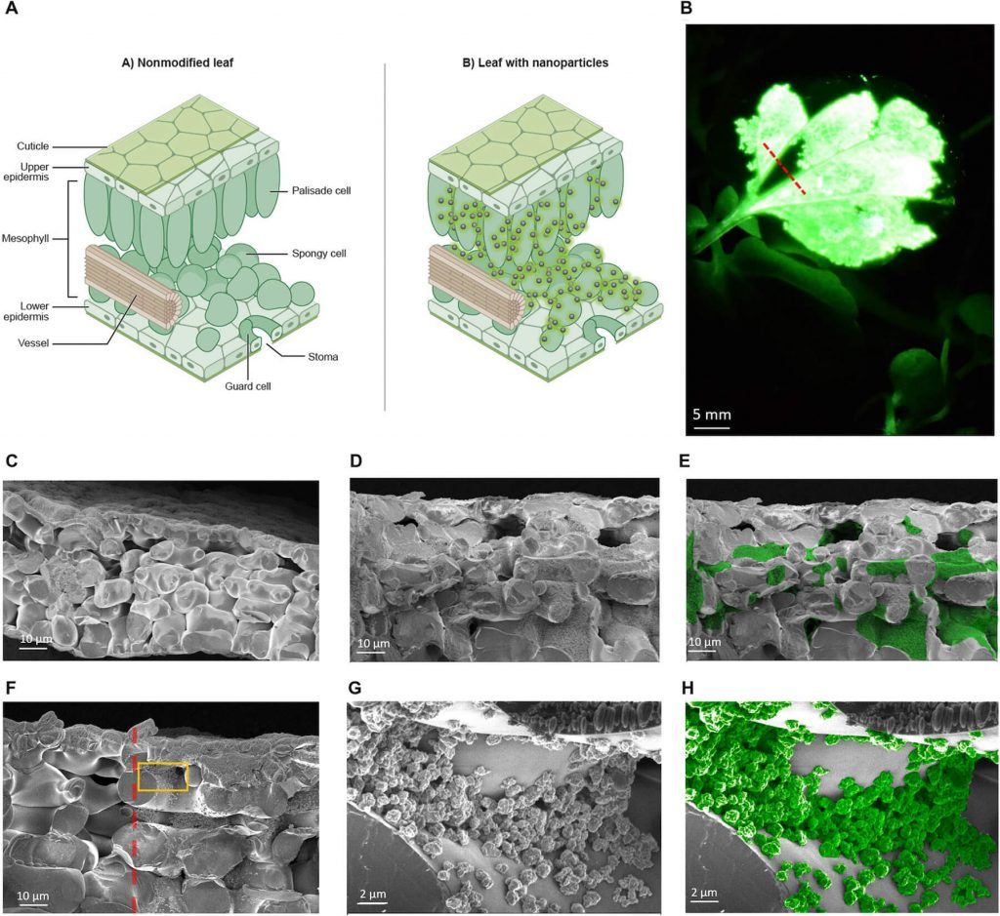

မက်ဆာချူးဆက် စက်မှု တက္ကသိုလ် (Massachusetts Institute of Technology (MIT)) က နာနိုဇီဝဗေဒ ပညာရှင်တွေ ၂၀၁၇ ခုနှစ်က တင်ပြခဲ့တဲ့ မီးလင်းတဲ့ အပင် သုတေသန အောင်မြင်မှုတွေကို အခြေခံပြီး MIT က ပညာရှင်တွေကပဲ အပင်တွေကို အလင်းရောင် ထုတ်ပေးနိုင်တဲ့ နည်းပညာကို တီထွင်လိုက်ပါတယ်။ ကျွန်တော်တို့ ကလေးဘဝက မျက်နှာကြက်မှာ ကပ်ခဲ့တဲ့ မီးရောင်ထွက်တဲ့ ကြယ်လေးတွေ လိုပေါ့ဗျာ။ ဒီနေရာမှာ အရေးအကြီး ဆုံးကတော့ ဒီ မီးလင်းတဲ့ အပင်တွေက လျှပ်စစ်စွမ်းအင် လို လူလုပ်စွမ်းအင်လိုအပ်ချက် မရှိတာပဲ ဖြစ်ပါတယ်။ ပြောရရင် တော့ Green Energy ပေါ့ဗျာ။
အခု ဒီနည်းစနစ်သစ်နဲ့ မွေးထုတ်ပေးလိုက်တဲ့ အပင်တွေဟာ အရင် ၂၀၁၇ ခုနှစ်က စိုက်ပျိုးခဲ့တဲ့ အပင်တွေထက် အလင်းရောင် တောက်ပမှုအားက ၁၀ ဆတောင်မှ ပိုတက်လာပါတယ်။ ဒီအပင်တွေက ထုတ်လွှတ်တဲ့ အလင်းရောင် ထွက်အားက တစ်စက္ကန့်ကို 4.8 x 10^13 photons ပမာဏ တောင်မှ ရှိပါတယ်။ (နှိုင်းယှဉ်ချက် အနေနဲ့ ဝပ် ၁၀၀ အား မီးလုံးတစ်လုံးက တစ်စက္ကန့် ထွက်တဲ့ ဖိုတွန် အရေအတွက်က 3.27 x 10^20 Photons အရေအတွက် ရှိပါတယ်။ ပြောရရင်တော့ ဝပ် ၁၀၀ အား မီးလုံးက ထွက်တဲ့ အလင်းရဲ့ အပုံ ၁၀ သန်းပုံမှ တစ်ပုံပဲ ရှိပါသေးတယ်)။
MIT သုတေသီတွေဟာ ဒီသုတေသနအတွက် အပင်ပေါင်းစုံကို စမ်းသပ်ခဲ့ကြပါတယ်။ ဒီလိုစမ်းသပ်တဲ့ အပင်တွေကနေ အလင်းရောင်ကို တစ်နာရီလောက်ကြာအောင် ထုတ်လွှတ်ပေးနိုင်တာကို တွေ့ရှိကြရပါတယ်။ သူတို့ရဲ့ တွေ့ရှိချက်ကို Science Advnces ဆိုတဲ့ ဂျာနယ်မှာ တင်ပြထားပါတယ်။
သုတေသန ဂျာနယ်ပါ မူရင်းစာတမ်း ဖတ်ရန် Augmenting the living plant mesophyll into a photonic capacitor
ဒီလို အလင်းရောင်ထွက်တဲ့ အပင်တွေ ရဖို့ သုတေသီတွေဟာ အပင်မျိုးစိတ် ၅ မျိုးကို ရွေးချယ် သုတေသန ပြုခဲ့ကြပါတယ်။ ဒီ အပင်တွေထဲကို strontium aluminate nanoparticles နာနို အမှုန်လေးတွေ စိမ့်ဝင်သွားအော အရင် ပြုလုပ်ရပါတယ်။ ဒီ နာနို အမှုန်လေးတွေဟာ စွမ်းအင် သိုမှီးနိုင်တဲ့ အစွမ်းရှိတဲ့ အမှုန်လေးတွေ ဖြစ်ပါတယ်။ ဒီ နာနိုအမှုန်လေးတွေကို အလင်းရောင် စုပ်တဲ့ phosphor ဓါတ်ပေါင်းနဲ့ ပြုလုပ်ထားတာပါ။ ဒီ ဖော့စ်ဖား ဆိုတာက မီးစုန်းတောက်တဲ့ ဓါတ်ပေါင်းတမျိုးပါ။
ဒီ နာနိုအမှုန်လေးတွေဟာ သာမန်အလင်းရောင် ကိုတင် စုပ်ယူတာ မဟုတ်ပါဘူး။ မျက်စေ့နဲ့ မမြင်နိုင်တဲ့ ခရမ်းလွန် ရောင်ခြည်ကိုလဲ စုပ်ယူနိုင်ပါတယ်။ ဒီစုပ်ယူထားတဲ့ အလင်းနဲ့ ခရမ်းလွန်ရောင်ခြည်က စွမ်းအင်တွေကို မှောင်တဲ့ အချိန်မှာ အလင်းရောင် အနေနဲ့ ပြန်ထုတ်ပေးထာ ဖြစ်ပါတယ်။

အပင်ပေါ် အလင်းရောင် ကျရောက်တဲ့ အခါ ဒီ အလွှာပါးလေးက အလင်းရောင်ထဲက ဖိုတွန် အလင်းမှုန်တွေကို ဖမ်းယူပြီး သိုလှောင်ထားလိုက်ကြပါတယ်။ အလင်းရောင် မရှိတော့တဲ့ အခါ ဒီဖိုတွန်တွေကို ပြန်ထုတ်ပေးပါတယ်။
၂၀၁၇ ခုနှစ်က သုတေသနမှာ ရရှိခဲ့တဲ့ အလင်းတောက် အပင်ထက် ပိုသာတဲ့ အချက်က ဒီ ဖော့်စဖါး ဓါတုပစ္စည်းကို အသုံးပြုလာ နိုင်ခြင်းပဲ ဖြစ်ပါတယ်။ ၂၀၁၇ ခုနှစ်တုန်းက မီးလင်းတဲ့ အပင် ပြုလုပ်တုန်းက လူစီဖယ်ရင် နဲ့ ဖူစီဖဲရေ့စ် (luciferin and luciferase) ဒြပ်ပေါင်း နှစ်မျိုးကို အသုံးပြုခဲ့ကြတာပါ။ ဒီပစ္စည်းက ပိုးစုန်းကျူးလေးတွေ မီးလင်းစေတဲ့ ပစ္စည်းပဲ ဖြစ်ပါတယ်။ ဒါပေမယ့် ဒီ ဒြပ်ပေါင်းတွေက အခု ဖော့စဖါး နဲ့ယှဉ်ရင် ပိုပြီး မှိန်ပါတယ်။
သက်ရှိအပင်တွေက ပလတ်စတစ်နဲ့ လုပ်တဲ့ ပစ္စည်းတွေ နေရာမှာ အစားထိုးဖို့ အခွင့်အလမ်း တစ်ခု ဖြစ်လာနိုင်မယ်လို့ ယခု သုတေသနကို ပြုလုပ်နေကြတဲ့ သုတေသီတွေက ယုံကြည်နေကြပါတယ်။ ပလတ်စတစ်တွေက သုံးပြီး လွှင့်ပစ်လိုက်တော့ သဘာဝပတ်ဝန်းကျင်ကို အရမ်းပဲ ထိခိုက်စေပါတယ်။ အပင်တွေကတော့ ပျက်စီးသွားလဲ အလွယ်တကူ ပြိုကွဲလွယ်သလို သဘာဝ မြေဩဇာလဲ ပြန်ဖြစ်သွားတာမို့ သဘာဝ ပတ်ဝန်းကျင် ထိခိုက်မှု မရှိဘူးလို့ ပညာရှင်တွေက ထောက်ပြကြပါတယ်။
“အခု နည်းပညာက သက်ရှိ အပင်တွေကို အလင်းထွက် ပစ္စည်းတွေ အဖြစ် ပြောင်းလဲနိုင်တဲ့ နည်းလမ်း ရှိတယ်ဆိုတာကို သက်သေပြနေပါတယ်” လို့ ဒီသုတေသန ပြုလုပ်တဲ့ ပညာရှင်တွေက ရှင်းပြပါတယ်။ ဒီ အပင်ကို အခြေခံတဲ့ အလင်းထွက် ပစ္စည်းတွေကို တချိန်မှာ လက်တွေ့ အသုံးပြုနိုင်တဲ့ အခြေအနေ ရောက်လာမယ်လို့ သူတို့က ယုံကြည်ထားကြပါတယ်။
Reference: In the Future, We’ll Use Glowing Plants as Lamps | Popular Mechanics